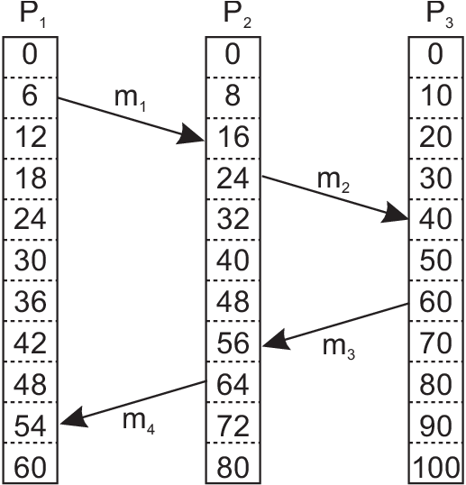
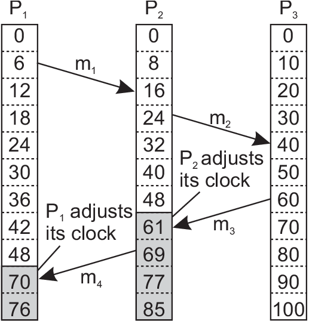
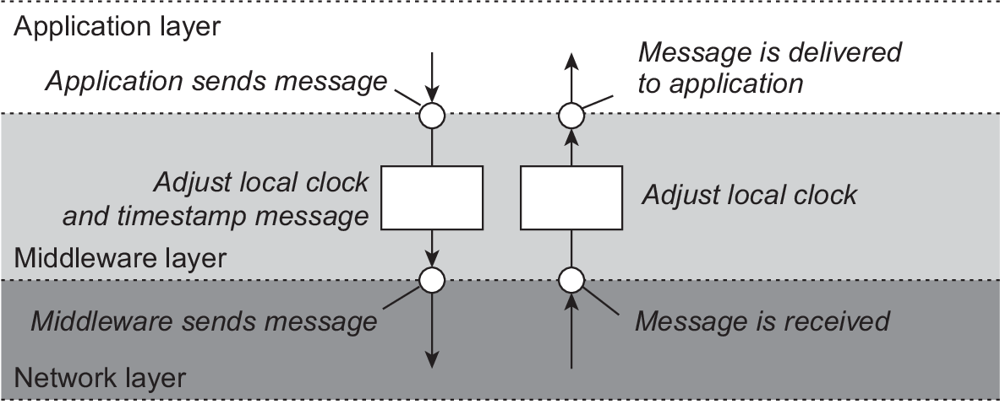
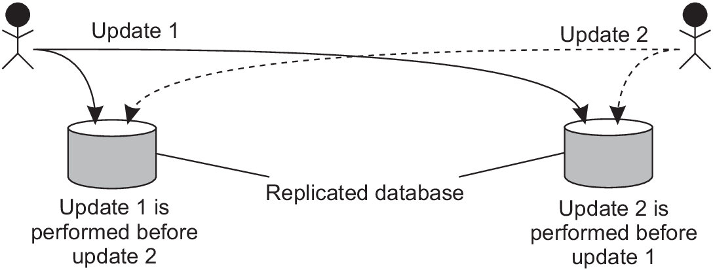

Coordination has a goal to manage the interactions and dependencies between activities in a distributed system
How processes cooperate and synchronize with one another?
It's important that all processes don't a shared resource simultaneously
Processes should agree on the ordering of events.
Whether process A sent the message M1 before process B sent the message M2
process synchronization - ensuring that one process waits for another to complete it's operation
Clock synchronization
In a centralized system time is definitive and reliable
example with a make program in linux which relies on time
in a distributed system this could be a big problem
There ara many activities which have to be carried out in a specific order
update has to be done in an exact order
application domains such as financial brockerage, security auditing, collaborative sensing
It could be differentiated two types of time:
Physical time
Logical time
Physical time
usually all CPUs have computer timer - clock
usually a precisely machined quartz crystal which
oscillate at well defined frequency
it's not possible to guarantee that crystals in different
computers run at exactly the same frequency
clock skew - difference in time values between different CPU's
How to synchronize clocks?
Physical time - cont.
mean solar second
measuring large number of days, taking the average and dividing by 86400
Atomic second
time it takes the cesium 133 atom to make exactly 9,192,631,770 transitions
Atomic second equals to mean solar second in 1958 when atomic clock has started - that's why
we have this specific number
(TAI) -International Atomic Time mean time of laboratories which have atomic clocks.
(UTC) -Universal Coordinated Time - worldwide standard
time which is generated from TAI and to which periodically
leap seconds are added to adopt to the average solar day
Clock synchronization
if one machine has UTC receiver (central time server)
then other machines (clients) have to be synchronized to the server's time
if there is no UTC receiver then the goal is to keep time on machines as closer as posible
Network Time Protocol (NTP)
networking protocol for clock synchronization between computer systems
machines are devided into strata
server with reference clock such as UTC receiver
is stratum-1 server (clock operates at stratum 0)
A will adjust time to B only if A is on the higher
stratum level than B
NTP is known to achieve worldwide accuracy in the range 1-50 msec
Logical time (logical clocks)
as in the example with make it would be adequate to outdate
file.o by a new version of file.c
processes should agree on the order in which events
occur" [Lamport-1978] and not exactly on the time
ordering of events based on two facts
if events occured on the same process then they occurred
in the order in which that proces observes them
if a message is sent between processes, the event of
sending occurred before the event of receiving the message
Lamport called this partial ordering relation
happens-before
Lamport logical clocks
happens-before relation - (a -> b) is read event a
happens before event b
can be observed directly in two situations:
a and b are events in the same process and a occurs
before b than a -> b is true
if a is a message sent by one process, and b is the
event of the message being received by another process,
then a -> b is also true
message cannot be received before it's sent and
not even at the same time (since transmission takes time)
Lamport logical clocks (cont.)
happens-before is a transitivite relation
if a -> b and b -> c then a -> c
if x and y happen in different processes and don't exchange
meassages even (not even indirectly via third parties) then
neither is x -> y nor y -> x (events are said to be concurrent)
when we need to assign timestamps to events (event counters) -
event a is assigned time C(a) , and should hold:
if a -> b then C(a) < C(b)
the clock timestamp (event counter) must always go forward when adjusted
Lamport algorithm for assingning timestamps
Each process $P_i$ maintains a local counter $C_i$
and adjusts that counter:
for each new event that takes place in $P_i$,
$C_i$ is incremented by 1
each time a message m is sent by process $P_i$,
the message receives a timestamp $ts(m) =C_i$
whenever a message m is received by a process $P_j$,
$P_j$ adjusts its local counter to $max\{ts(m), C_j\}$,
then executes 1 before passing m
if it still occurs that two events happen at the same time
this is done by breaking ties through process IDs and then we have
pairs
Lamport algorithm - example
three processes with event counters


Logical clocks - implementation
Adjustments are implemented in middleware

Total ordering multicast
issues with replicated resources in the absence of synchronization
database is replicated and is physicaly located on two distant places
(Los Angeles and New York)
customer has 1000$ on his account
two processes have to update the same account
the first increases the account with 1% interest and the second adds
100$ to the account
if the order of execution is $first -> second$
- final balance will be 1110$
if the order of execution is $second -> first$
- final balance will be 1111$
Total ordering multicast - problem

from the consistency point of view it is not important which
order is followed
it is important that both copies should be the same
solution - multicast operation by which all messages are
delivered in the same order to each receiver
Total ordering multicast - solution
Lamport's logical clocks can be used to implement total
ordering multicast
each message is timestamped with the current (logical) time
of it's sender
when process receives the message it put it into a local
queue, ordered according to its timestamp
receiver multicast an acknowledgement to other processes.
goal is that all processes have the same copy of the
local queue
message is delivered to application when it's at the head
of the queue and has acknowledgement by each other process